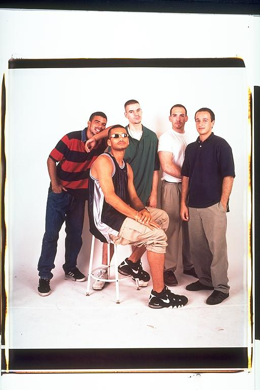

Casey: If there was one good thing to come from the small private school where I spent three years of my teenage development, it would be meeting Gabe, Isaac and Eugene. We all felt out of place at Commonwealth and bonded together for love of hip-hop and humor. We called ourselves the A-1 steak posse and always would try to crack jokes at lunch so someone would spit milk out of their nose. We all ended up leaving for various reasons but we're still as close as ever.
